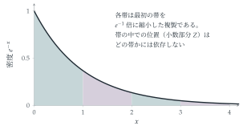

STEP III 2021、第11問
先に進む前に問題を読んでおこう。問題は、OCRが配布している2021年のSTEP問題一式（zipファイル）のSTEP IIIに収録されている： www.ocr.org.uk/Images/696588-2021-past-papers.zip
導入
ある放射性原子が、研究室で100万年ものあいだ崩壊せずに残っているとする。この原子はそろそろ崩壊する「はず」だろうか。そうではない。次の1秒間に崩壊する確率は、つくられたばかりの原子の場合とまったく同じである。放射性原子は年をとらないのである。崩壊までの待ち時間は指数分布（exponential distribution）に従い、その本質的な性質は記憶をもたないことである。
この問題は、その無記憶性（memorylessness）を印象的な形で示している。指数分布に従う待ち時間を、整数単位の部分と小数部分に分ける。すると、この二つは独立（independent）であることがわかる。何時間（整数部分）待ったかを知っても、端数の分については何もわからないのである。また演習問題では、バスを待つ時間がバスの運行間隔より長く感じられることがある理由も説明する。
取りかかる前に
\(x \geq 0\) に対して \(\mathrm{P}(X > x)\) はいくらか。\(\mathrm{P}(X > s + t \mid X > s)\) はいくらか。
\(\mathrm{P}(X > x) = \int_x^\infty\lambda e^{-\lambda u}\,\mathrm{d}u = e^{-\lambda x}\) である。したがって \(\mathrm{P}(X > s + t \mid X > s) = \frac{e^{-\lambda(s + t)}}{e^{-\lambda s}} = e^{-\lambda t} = \mathrm{P}(X > t)\) となる。すでに \(s\) だけ待ったとしても、残りの待ち時間は新たに待ち始める場合と同じ分布に従う。これが無記憶性である。
順を追って解く
段階 1 整数部分
\(Y = n\) となるのは、ちょうど \(n \leq X < n + 1\) のときである。 \[\mathrm{P}(Y = n) = e^{-\lambda n} - e^{-\lambda(n + 1)} = (1 - e^{-\lambda})e^{-n\lambda}. \qed\] よって \(Y\) は幾何分布（geometric distribution）に従う。各単位時間を確率 \(e^{-\lambda}\) で「生き延びる」わけである。
段階 2 小数部分
\(Z < z\) とは、\(X\) が区間 \([n, n + z)\) のいずれかに入るということである。それらの確率を足し合わせよ。
\[\mathrm{P}(Z < z) = \sum_{n \geq 0}\bigl(e^{-\lambda n} - e^{-\lambda(n + z)}\bigr) = (1 - e^{-\lambda z})\sum_{n \geq 0}e^{-\lambda n} = \frac{1 - e^{-\lambda z}}{1 - e^{-\lambda}}. \qed\]
段階 3 \(Z\) の平均
\([0, 1]\) に値をとる確率変数（random variable）に対しては \(\mathrm{E}(Z) = \int_0^1\mathrm{P}(Z > z)\,\mathrm{d}z\) が成り立つ。これを用いよ。
\(c = 1 - e^{-\lambda}\) とおくと \(\mathrm{P}(Z > z) = 1 - \frac{1 - e^{-\lambda z}}{c}\) であるから、 \[\mathrm{E}(Z) = 1 - \frac1c\Bigl(1 - \frac{1 - e^{-\lambda}}{\lambda}\Bigr) = 1 - \frac1c + \frac1\lambda = \frac1\lambda - \frac{e^{-\lambda}}{1 - e^{-\lambda}} = \frac1\lambda - \frac{1}{e^\lambda - 1}. \qed\] （\(\lambda\) が小さい、すなわち待ち時間が長いとき、これは \(\frac12\) に近づく。小数部分はほぼ一様分布になるのである。\(\lambda\) が大きいときは \(\frac1\lambda\) に近い。\(X\) がほとんど常に \(1\) より小さいからである。）
段階 4 独立性
\[\mathrm{P}(Y = n, z_1 < Z < z_2) = \mathrm{P}(n + z_1 < X < n + z_2) = e^{-\lambda n}\bigl(e^{-\lambda z_1} - e^{-\lambda z_2}\bigr).\]
小問 (i) と (ii) を用いて、\(\mathrm{P}(Y = n)\,\mathrm{P}(z_1 < Z < z_2)\) と比較せよ。
(i) と (ii) より \(\mathrm{P}(Y = n)\mathrm{P}(z_1 < Z < z_2) = (1 - e^{-\lambda})e^{-n\lambda}\cdot\frac{e^{-\lambda z_1} - e^{-\lambda z_2}}{1 - e^{-\lambda}}\) であり、これは上と一致する。よって \(Y\) と \(Z\) は独立である。■

振り返り
区間ごとに足し合わせる。 \(Z\) の分布も同時確率も、区間 \([n, n + 1)\) ごとの確率を足し合わせることで得られた。
裾の公式。 \(\mathrm{E}(Z) = \int\mathrm{P}(Z > z)\,\mathrm{d}z\) を使うことで、密度関数を求めずに済んだ。
積に分解できることは独立性を意味する。 同時確率が、\(n\) の関数と \(z_1\), \(z_2\) の関数の積に分解された。
背後にある数学
指数分布はなぜ特別なのか
\(Y\) と \(Z\) の独立性は \(e^{-\lambda(n + z)} = e^{-\lambda n}e^{-\lambda z}\) から直接導かれるが、これは無記憶性が姿を変えたものにほかならない。実は、記憶をもたない連続分布は指数分布だけである。すべての \(s, t \geq 0\) に対して \(\mathrm{P}(X > s + t) = \mathrm{P}(X > s)\mathrm{P}(X > t)\) が成り立つならば、\(g(t) = \ln\mathrm{P}(X > t)\) は \(g(s + t) = g(s) + g(t)\) を満たし、（\(g\) が単調ならば）これにより \(g(t) = -\lambda t\) となる。だからこそ指数分布は、蓄積なしに「ランダムに」起こる事象の待ち時間のモデルとなるのである。放射性崩壊、客の到着、摩耗しない電子部品の故障などがその例である。
最小値と待ち時間のパラドックス
\(X_1\) と \(X_2\) がそれぞれ率 \(\lambda_1\), \(\lambda_2\) の独立な指数分布に従うならば \(\mathrm{P}(\min > x) = e^{-\lambda_1x}e^{-\lambda_2x}\) であるから、最小値は率 \(\lambda_1 + \lambda_2\) の指数分布に従う。二つの独立なランダムな事象のうち最初のものを待つことは、合わせた率で起こる一つの事象を待つことと同じである（演習問題の STEP III 2002 Q13）。無記憶性は待ち時間のパラドックス（waiting-time paradox）も説明する。バスがランダムに到着し、平均の間隔が \(10\) 分であるとき、ランダムな時刻に到着した乗客の平均待ち時間は \(5\) 分ではなく \(10\) 分である。残りの待ち時間は記憶をもたないからである。さらに、乗客が到着した時点を含む間隔の長さは平均 \(20\) 分である。長い間隔ほど、その中に到着しやすいからである。
1910年、アーネスト・ラザフォード（Ernest Rutherford）とハンス・ガイガー（Hans Geiger）は、放射線源から放出されるアルファ粒子を \(7.5\) 秒ごとの区間で数え、その個数がポアソン分布（Poisson distribution）に従うことを見いだした。放出が一定の率で独立に起こるならばそうなるはずであることを、数学者 Harry Bateman が示していた。このとき放出と放出の間の時間は指数分布に従う。ポアソン過程（Poisson process）、すなわち間隔が指数分布に従う事象の列は、今日では時間におけるランダムさの基本モデルであり、電話の呼び出し、保険金の請求、ニューロンの発火などに用いられている。次の節 第 12.19 節 では、これを空間へと拡張する。
思考のスキル
二つの確率変数は、その同時確率が一方の関数と他方の関数の積に分解されるならば独立である。
大学では、同時密度関数の積への分解（factorisation）が独立性を確かめる標準的な方法であり、多変量の問題で独立な成分を見抜く手段となる。たとえば 第 12.22 節 における、正規分布に従う点の動径と偏角がその例である。
次の一歩
二つのバス路線。 STEP III 2002、第13問 に挑戦せよ。二つの指数分布に従う確率変数の最小値を用いて、次のバスまでの待ち時間を求める問題である。
離散分布の無記憶性。 幾何分布が記憶をもたないこと、すなわち \(\mathrm{P}(Y \geq m + n \mid Y \geq m) = \mathrm{P}(Y \geq n)\) を示せ。
待ち時間のパラドックス。 バスが率 \(\lambda\) のポアソン過程に従って到着する。固定された時刻 \(t\) を含む間隔の長さの期待値は（\(t\) が大きいとき）\(\frac2\lambda\) であり、平均間隔の2倍であることを示せ。
\(Z\) の密度関数。 \(Z\) の確率密度関数を求め、\(\lambda = 1\) と \(\lambda = 5\) の場合についてその概形をかけ。
さらに学ぶために
Geoffrey Grimmett & Dominic Welsh, Probability: An Introduction（Oxford University Press）。指数分布とポアソン過程について。
Sheldon Ross, Introduction to Probability Models（Academic Press）。指数分布、ポアソン過程、待ち行列。
David Spiegelhalter, The Art of Uncertainty（Pelican）。日常生活におけるランダムさと待ち時間。